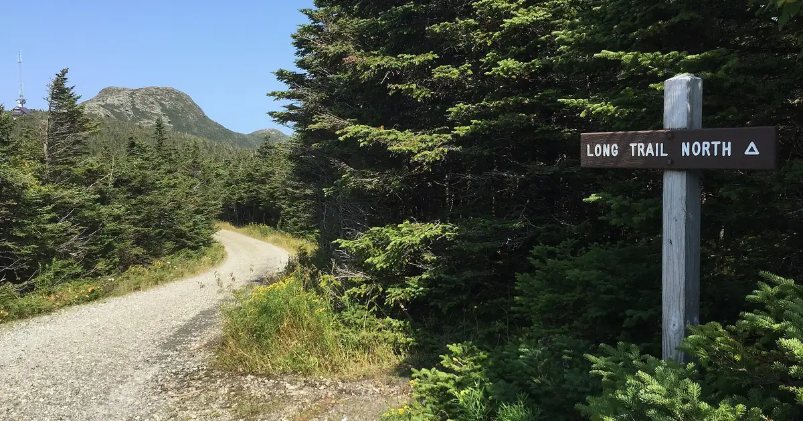
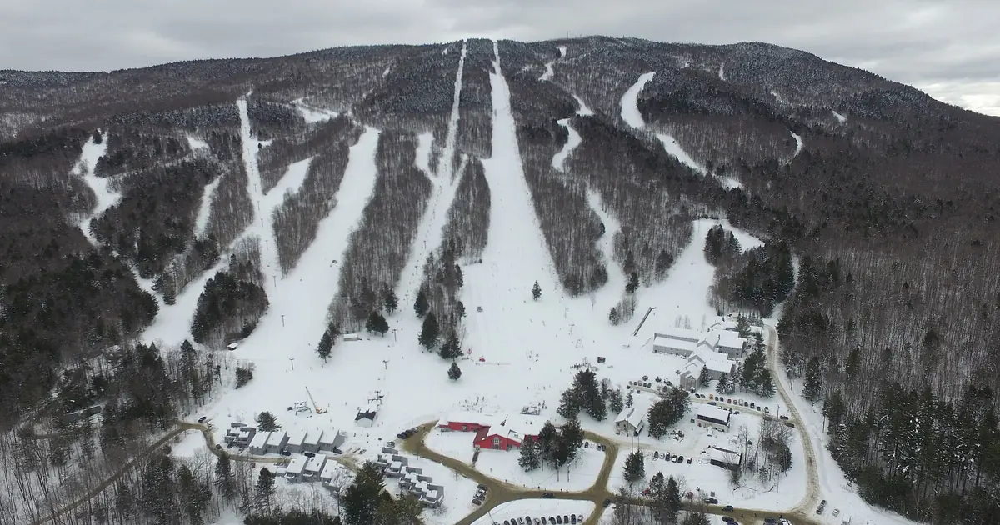
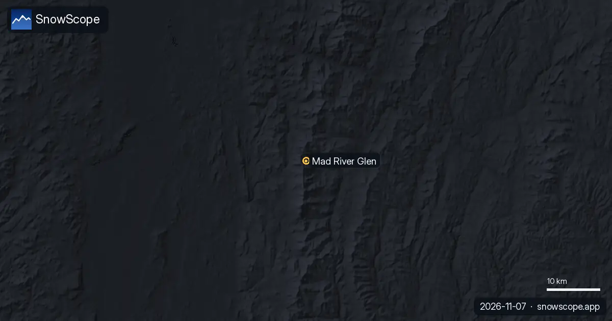

Snow reports · US Northeast
Daily snow reports for skiers: where the snow is, what is coming and where to ski, from the SnowScope snow map and measuring stations. Every number comes from that day's data.
Monday 9 November 2026

US Northeast · 9 NovemberStowe ski kit list: what to wear and pack for cold, wind and ice on Mount Mansfield
A practical kit list for Stowe, Vermont: layers, face cover, goggles, sharp edges and hand warmers, tied to the snow of 46 past winters on Mount Mansfield.

US Northeast · 9 NovemberMagic Mountain, Vermont: five things to know before you go
Magic Mountain in Londonderry, Vermont: an independent hill with steep glades, an old red chairlift and thin natural snow. Five things to know, with the snow of 46 past winters.

US Northeast · 9 NovemberMad River Glen, Vermont: three ways to ski the single-chair mountain
Mad River Glen, Vermont: natural snow, about 30 in (75 cm) at the usual peak at mid-mountain over 46 past winters, February deepest. Three ways to plan a day there.
Sunday 8 November 2026
Friday 6 November 2026
SnowScope on your phoneSnow depth for every resort, powder alerts and the 3D map, free.
Download the app